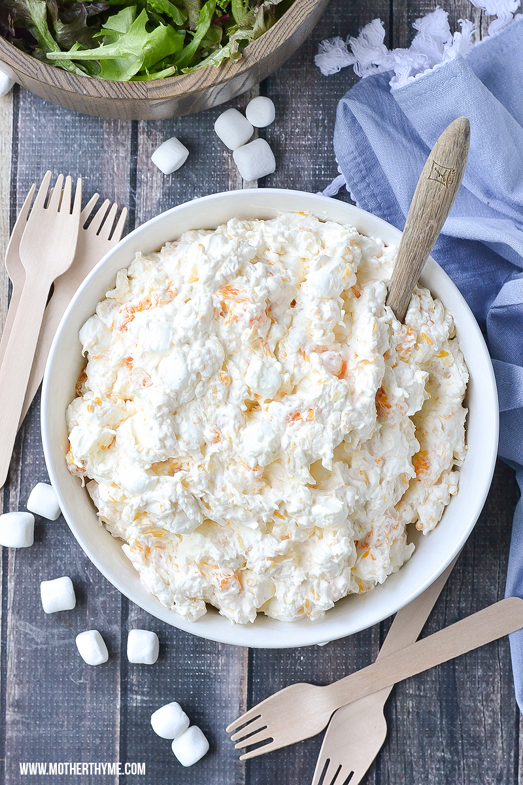

Judy Salad

Description
The myth, the legend. Some day we'll try a veg version, but here's the
classic.
Ingredients
- 1 cup milk
- 1 lb mini marshmallows
- 1 package Lemon Jello
- 2 cups whipping cream
- 1 can crushed or chunk pineapple
- 1 small jar Marachino cherries
- 1-2 Graham crackers
Steps
- Bring cup milk to a boil
- Add 1 poung marshmallows and 3 tablespoons of Lemon Jello
- Take off heat, mix and cool (don't melt smooth)
- Whip 2 cups cream
- Add 1 can pineapple (drained)
- Fold marshmallow mixture into whipped cream/pineapple mixture
- Top with 1 small jar marashino cherries (drained)
- Top with graham cracker crumbs
- Chill
Judi Fraser to Glory Weinrich 1962
Glory Weinrich to Sherry Weinrich 1972
Sherry Wren neé Weinrich to Meghan, Morgan, Jessica, Jazzmine 2021